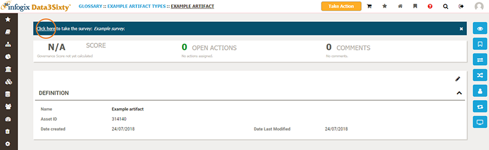
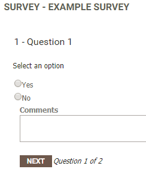
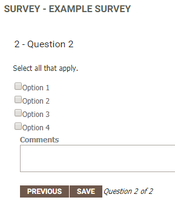

|
|
Responding to a survey
When you are viewing the details page of an artifact, model or rule, you may see a link to a survey at the top of the page:

Tip: A survey link will only be displayed if an Administrator at your organization has created one and associated it with the item type that you are viewing.
- Start the survey by following the Click here link.
- Respond to each question. If the question requires you to select one answer, you will see circular radio buttons to the left of the options:

If you are able to select multiple options, you will see square check boxes to the left of the options:

On each question, you have the option to add a comment. You can navigate between questions by using the Next and Previous buttons. There is no requirement to answer all questions.
- When you have reached the final question, click Save to submit your survey response.
Once you have taken a survey, you will need to wait a specified amount of time before you see the option to take the survey again. The Administrator who created the survey will have specified the time that must elapse before you can retake a survey. The survey response information is stored in the database and can be reported on via dashboards.